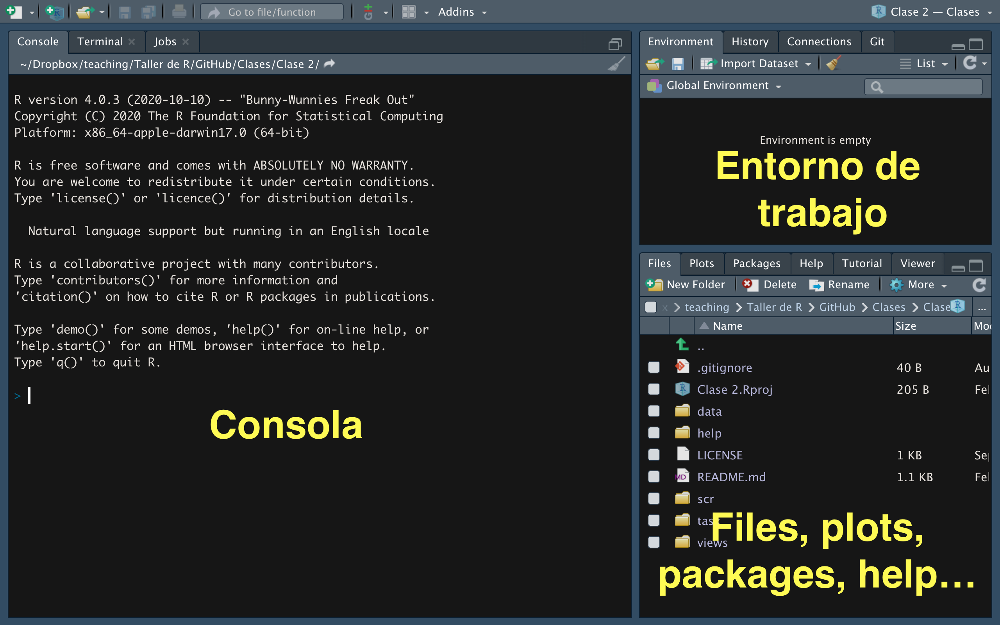

Unidad 1 - Fundamentos de R y flujo de trabajo reproducible
Curso Nivelatorio de R · CIENFI · Universidad Icesi
1 Objetivo de la unidad
Este es un curso de nivelación, no un curso de programación en abstracto. El objetivo de esta unidad NO es memorizar sintaxis: es entender qué hace R cuando ejecutamos código, cómo leer lo que nos responde y cómo organizar el trabajo desde el primer día para que cualquier análisis sea reproducible.
¿Por qué R en una Maestría en Economía?
Porque el trabajo empírico en economía es, en la práctica, un flujo de datos: importar una base (una encuesta de hogares, un panel de firmas, registros administrativos), limpiarla, construir variables, describirla, estimar un modelo y comunicar resultados. R cubre todo ese flujo con una ventaja clave sobre Excel o el trabajo manual: cada paso queda escrito en un script que cualquiera puede volver a ejecutar. Esa propiedad —la reproducibilidad— es hoy un estándar en la investigación aplicada y en el trabajo profesional con datos.
1.1 Lo que aprenderemos en esta unidad
1. Entender qué hace R cuando ejecutamos código
- Qué pasa “por dentro” cuando presionamos ejecutar
- Cómo R almacena información (objetos en memoria)
- Por qué algunos comandos funcionan y otros no
2. Leer e interpretar lo que R nos muestra
- Diferenciar entre resultados normales, advertencias (warnings) y errores
- Entender la consola como “conversación” con R
- Leer el panel Environment para saber qué existe en cada momento
3. Reconocer objetos y estructuras de datos
- Vectores (una dimensión) y data frames (tablas)
- Cómo acceder y manipular información básica
4. Trabajar de forma ordenada y reproducible
- Proyectos de RStudio (
.Rproj) y rutas relativas - Estructura de carpetas del curso y estilo de scripts
2 Interfaz de RStudio
R es el lenguaje; RStudio es un IDE (Entorno de Desarrollo Integrado) que hace más fácil trabajar con R. Organiza su espacio de trabajo en cuatro paneles, cada uno con una función específica.

2.1 Los cuatro paneles principales
2.1.1 Panel superior izquierdo: Source (Editor de scripts)
Este es nuestro “cuaderno de trabajo”. Aquí:
- Escribimos código que queremos guardar y reutilizar
- Documentamos nuestro análisis paso a paso
- Ejecutamos líneas con
Ctrl + Enter(Windows/Linux) oCmd + Enter(Mac)
¿Por qué escribir aquí y no directamente en la consola?
Porque necesitamos poder reproducir nuestro trabajo, corregir errores y compartir análisis con otros. El script es nuestra “memoria” del proceso analítico: si dentro de tres meses un coautor (o su yo del futuro) pregunta cómo se construyó una variable, la respuesta debe estar en el script, no en la memoria de nadie.
2.1.2 Panel inferior izquierdo: Console (Consola)
La consola es donde R “nos habla”. Aquí:
- Aparecen los resultados de lo que ejecutamos
- R nos muestra mensajes, advertencias y errores
- Podemos escribir código directamente (pero no se guarda)
Cómo leer la consola
Cuando ejecutamos código, R puede responder de tres formas:
- Resultado normal: muestra el output esperado
- Warning (advertencia): algo inesperado, pero el código continúa
- Error: algo falló y el código se detiene
Aprenderemos a distinguir estos tres casos más adelante en esta misma unidad.
2.1.3 Panel superior derecho: Environment / History
Environment (Entorno): muestra todos los objetos que hemos creado en la sesión actual (datos, variables, resultados). Es el “inventario” de lo que existe en la memoria de R en este momento.
History (Historial): registra todos los comandos que hemos ejecutado durante la sesión.
El Environment es su aliado
Durante todo el curso, el panel Environment será su mejor referencia. Si un objeto no aparece aquí, R no lo “conoce” y dará error si intenta usarlo. Si ejecutó código correctamente, debería ver nuevos objetos aparecer en este panel.
2.1.4 Panel inferior derecho: Files / Plots / Packages / Help
Files: navegador de archivos del proyecto (carpetas, datos, scripts) Plots: visualización de gráficos que generamos Packages: listado de paquetes (librerías) instalados y cargados Help: documentación de funciones (se abre cuando usamos ?nombre_funcion)
2.2 Flujo de trabajo recomendado
La rutina de trabajo en RStudio
- Escribo código en el panel Source (script)
- Ejecuto la línea o bloque seleccionado (
Ctrl/Cmd + Enter) - Reviso el resultado en la Console (¿funcionó? ¿error? ¿warning?)
- Verifico el Environment (¿se creó el objeto? ¿tiene los valores esperados?)
Este ciclo se repite constantemente durante el análisis de datos. No es necesario memorizarlo: se volverá automático con la práctica.
2.3 Mini-ejercicio: Reconociendo los paneles
Abra RStudio y localice cada panel. Luego:
- En la Console, escriba
2 + 2y presione Enter. ¿Dónde aparece el resultado?
- Escriba
?meanen la consola. ¿En qué panel se abre la ayuda?
Si puede responder estas preguntas, ya entendió la función básica de cada panel.
3 R como calculadora
Antes de trabajar con datos, podemos usar R como calculadora para familiarizarnos con la consola.
3.1 Operaciones aritméticas básicas
Nota importante: estos resultados aparecen en la consola pero no se guardan en ningún lugar. Si queremos reutilizar un resultado, necesitaremos aprender a “guardarlo” (lo haremos en la sección de objetos).
3.2 Orden de precedencia
R sigue las reglas matemáticas estándar: paréntesis ( ), potencias ^, multiplicación * y división /, suma + y resta -.
Regla práctica
Cuando tenga dudas sobre el orden de operaciones, use paréntesis. Es mejor ser explícito que obtener un resultado inesperado. Ejemplo típico en economía: una tasa de crecimiento se calcula (final - inicial) / inicial, y los paréntesis del numerador NO son opcionales.
3.3 Operadores de comparación
R puede comparar valores y devolver verdadero o falso:
Nota importante: para comparar si dos valores son iguales usamos == (dos signos igual). Más adelante veremos que = (un solo igual) sirve para otra cosa: asignar valores dentro de funciones.
3.4 Operadores lógicos
¿Para qué sirven estas comparaciones?
En la Unidad 2 usaremos estos operadores para filtrar bases de datos. Por ejemplo: “mostrar solo las firmas con ventas > 1000 millones y departamento == ‘Valle del Cauca’”. Por ahora, solo necesitamos saber que existen y cómo funcionan.
4 Tipos de datos
En R existen diferentes tipos de datos. Los tres más comunes son: numérico, carácter y lógico.
4.1 Numérico
4.2 Carácter (texto)
Siempre va entre comillas " " o ' ':
Cuidado con las comillas
100 (sin comillas) es un número que puede sumarse, multiplicarse, etc. "100" (con comillas) es texto que R no puede usar en operaciones matemáticas.
Este es un error muy común al importar datos: una columna de ingresos que llega como texto ("1.200.000", "ND", "$500") no se puede promediar hasta convertirla en número. Lo veremos de frente en la Unidad 2.
4.3 Lógico
Solo dos valores posibles: TRUE o FALSE (en mayúsculas, sin comillas). Resultan de comparaciones:
4.4 Valores especiales
¿Cuál es la diferencia entre NA y NULL?
- NA significa “dato faltante”: había un espacio para un valor, pero no lo conocemos. Ejemplo: un hogar encuestado no reportó su ingreso.
- NULL significa “inexistente”: no hay ni siquiera un espacio.
En datos de encuestas (GEIH, EDIT, censos) los NA son la regla, no la excepción. Buena parte de la Unidad 2 trata sobre qué hacer con ellos.
Hasta aquí hemos visto: podemos usar R como calculadora y obtener resultados inmediatos, pero estos resultados no se guardan. En la siguiente sección aprenderemos a guardar información para reutilizarla.
5 Objetos y asignación
5.1 ¿Qué es un objeto?
Un objeto es un nombre que almacena información en la memoria de R. Es como una etiqueta que le ponemos a algo para poder referirnos a ello después.
Analogía: si calculamos 10 + 5, el resultado 15 aparece en la consola pero desaparece inmediatamente. Si queremos usar ese 15 más tarde, necesitamos “guardarlo” con un nombre. Eso es un objeto.
Concepto fundamental: todo es un objeto
En R absolutamente todo es un objeto: un número, una base de datos, un gráfico, un modelo de regresión estimado. Esta filosofía nos permite tener varias bases abiertas al mismo tiempo, guardar los resultados de distintos modelos y compararlos, sin “guardar y cargar” constantemente como en Excel o Stata.
5.2 Crear objetos: asignación con <-
Estructura general:
nombre_objeto <- valor_o_resultado¿Qué pasó?
- R calculó el valor
1300000 - Lo guardó en memoria con el nombre
salario_mensual - El objeto aparece en el panel Environment
- Ahora podemos usar ese nombre en lugar de escribir el número cada vez
5.3 Más ejemplos de asignación
5.4 ¿<- o =?
Ambos funcionan para asignar, pero la convención de la comunidad R (y de este curso) es:
Recomendación del curso
Use <- para asignar objetos:
resultado <- mean(ingresos)Reserve = para argumentos dentro de funciones:
mean(ingresos, na.rm = TRUE)Atajo de teclado: Alt + - (Windows/Linux) u Option + - (Mac) escribe <- automáticamente.
5.5 Reglas para nombrar objetos
Reglas obligatorias:
- Debe empezar con letra (no con número)
- Puede contener letras, números,
.y_ - NO puede contener espacios ni tildes
- Es sensible a mayúsculas (
ingreso≠Ingreso)
Buenas prácticas de nomenclatura (estándar del curso)
Use snake_case: minúsculas, sin tildes, palabras separadas con _.
# Mal
x <- 1500
VentasTotales2024 <- 2000
# Bien
salario_hora <- 1500
ventas_totales <- 2000Prefiera nombres descriptivos (tasa_descuento dice más que 0.15 suelto) y evite nombres de funciones existentes (mean, data, df).
5.6 Mini-ejercicio: Creando objetos
Revise el panel Environment: debería ver cuatro objetos creados.
6 Inspeccionar objetos: clase y estructura
Ahora que sabemos crear objetos, necesitamos herramientas para inspeccionar qué contienen. R provee dos funciones “lupa” que usaremos todo el semestre:
str() muestra la estructura completa (será especialmente útil con tablas):
¿Cuándo usar las lupas?
- Al importar datos: ¿la columna de ingresos quedó numérica o llegó como texto?
- Al recibir un error: ¿el objeto es del tipo que la función espera?
- Antes de calcular: ¿este promedio tiene sentido con este tipo de dato?
En la Unidad 2 estas preguntas serán el primer paso de todo diagnóstico de una base de datos.
7 ¿Qué puede pasar en la consola?
Cuando ejecutamos código, R nos responde de tres formas. Aprender a interpretarlas es la habilidad más importante de esta unidad.
7.1 Output normal (resultado esperado)
La notación [1] indica que estamos viendo el primer elemento del resultado.
7.2 Warning (advertencia)
Un warning NO detiene la ejecución, pero alerta que algo inesperado ocurrió.
Otro ejemplo, el más común en datos reales:
El resultado es NA porque hay un dato faltante. La solución:
¿Qué hacer cuando ve un warning?
- Lea el mensaje completo (no lo ignore automáticamente)
- Revise el resultado: ¿tiene sentido o es
NA/NaN? - Ajuste el código si es necesario (como agregar
na.rm = TRUE)
Los warnings son “alertas amarillas”: R pudo ejecutar, pero quiere que verifiquemos.
7.3 Error (fallo que detiene la ejecución)
Mensaje: Error: object 'ingreso_promedio_hogar' not found
Interpretación: R buscó ese nombre en el Environment y no lo encontró. Posibles causas: olvidamos crearlo, lo escribimos mal, o lo borramos.
Mensaje: unused argument (naa.rm = TRUE) → el argumento correcto es na.rm.
¿Qué hacer cuando ve un error?
- No entre en pánico: los errores son normales, incluso para programadores expertos
- Lea el mensaje completo: usualmente indica qué salió mal
- Revise ortografía: nombres de objetos, funciones y argumentos son sensibles a mayúsculas
- Verifique el Environment: ¿el objeto que intenta usar realmente existe?
- Use
?nombre_funcionpara verificar los argumentos correctos
La habilidad de leer y entender errores es más importante que memorizar sintaxis. En la actividad con IA de esta unidad practicaremos, además, cómo pedirle a un asistente que nos explique un error — y cómo verificar que su explicación sea correcta.
7.4 Mini-ejercicio: Identificando mensajes
Ejecute estos tres códigos y clasifique cada resultado como “output normal”, “warning” o “error”:
Respuestas esperadas: Caso 1 → output normal (60). Caso 2 → warning (NaN). Caso 3 → error (objeto no existe).
8 Funciones y sistema de ayuda
En R, prácticamente todo lo que “hace algo” es una función. Una función tiene tres componentes:
- Nombre: identifica qué hace (
mean,sum,seq) - Argumentos: valores que recibe como input (van entre paréntesis)
- Resultado: output que devuelve
nombre_funcion(argumento1 = valor1, argumento2 = valor2, ...)8.1 Funciones básicas comunes
8.2 Sistema de ayuda: consultando documentación
Para saber qué hace una función y qué argumentos acepta:
La documentación tiene esta estructura: Description (qué hace), Usage (sintaxis), Arguments (qué recibe), Value (qué devuelve) y Examples (¡la sección más útil!).
Cómo leer la ayuda eficientemente
- Lea la sección Description (¿hace lo que necesito?)
- Vaya directo a Examples (copie y ejecute un ejemplo)
- Regrese a Arguments solo cuando necesite ajustar algo específico
No necesita memorizar funciones: necesita saber que existen y cómo consultar su documentación. Con el uso, las más frecuentes se memorizan solas.
9 Paquetes y librerías
R viene con funciones básicas incluidas (base R), pero su verdadero poder está en los paquetes: conjuntos de funciones especializadas creados por la comunidad. Existen más de 20.000 en el CRAN (repositorio oficial).
Los que usaremos en este curso:
tidyverse: la colección central (incluyedplyr,ggplot2,readr,tidyr)readxl: leer archivos de Exceljanitor: limpiar nombres de columnas y tablas de frecuenciasskimr: resumen rápido de una baserio: importar/exportar casi cualquier formato con una sola funciónfixestymodelsummary: regresiones y tablas (Unidad 4)
9.1 Dos pasos: instalar vs. cargar
Diferencia fundamental
| Acción | Comando | Frecuencia | Analogía |
|---|---|---|---|
| Instalar | install.packages("dplyr") |
Una sola vez por computador | Comprar un libro y ponerlo en el estante |
| Cargar | library(dplyr) |
Cada vez que inicia R | Sacar el libro del estante para leerlo |
# Instalar (una vez, en la consola — NUNCA dentro de un script)
install.packages(c("tidyverse", "readxl", "janitor", "skimr", "rio"))
# Cargar (al inicio de cada script)
library(dplyr)Error común: intentar usar un paquete sin cargarlo
filter(datos, edad > 25)
# Error: could not find function "filter"Si R dice could not find function, casi siempre falta un library().
9.2 Atajo del curso: pacman
El paquete pacman simplifica la gestión: p_load() carga el paquete y, si no está instalado, lo instala primero automáticamente.
Práctica estándar para este curso
Todos los scripts del curso empiezan con:
## llamar/instalar librerias
require(pacman)
p_load(tidyverse, rio, janitor, skimr)Así el script funciona en cualquier computador sin instrucciones adicionales. Es la primera regla de la Guía de estilo de scripts del curso.
10 Vectores
Un vector es la estructura de datos más simple en R. Casi todo en R es un vector o está construido a partir de vectores: cada columna de una base de datos es un vector.
Características de un vector
- Homogéneo: todos los elementos son del mismo tipo (numérico, carácter o lógico)
- Una dimensión: una secuencia ordenada de valores
- Ordenado: cada elemento tiene una posición (1, 2, 3, …)
10.1 Crear vectores: función c()
La función c() (combine) une elementos en un vector:
10.2 Secuencias regulares
10.3 Indexación: acceder a elementos
R indexa desde 1 (no desde 0 como Python):
Indexación con condiciones lógicas
Podemos seleccionar elementos que cumplan una condición:
Esta técnica es la base conceptual del filter() de dplyr que veremos en la Unidad 2.
10.4 Funciones útiles para vectores
10.5 Mini-ejercicio: Análisis de ingresos
La pregunta 2 no es de R, es de economía: las distribuciones de ingreso son asimétricas a la derecha, y por eso el promedio supera a la mediana. Volveremos a esto —con datos reales de la GEIH— en las Unidades 3 y 4.
11 Data frames
Los data frames son LA estructura central para análisis de datos en R: el equivalente a una hoja de cálculo o a una base de Stata.
Características de un data frame
- Heterogéneo: cada columna puede ser de un tipo diferente
- Rectangular: filas (observaciones) × columnas (variables), todas las columnas del mismo largo
- En economía aplicada: cada fila es una unidad de observación (una persona, una firma, un municipio, un país-año) y cada columna es una variable
11.1 Crear un data frame
11.2 Inspeccionar un data frame
Interpretación de str()
'data.frame': 5 obs. of 4 variables → 5 filas, 4 columnas. Luego, para cada columna, su tipo (int, chr, num) y sus primeros valores. str() (y su versión mejorada glimpse(), en la Unidad 2) es siempre el primer comando después de importar cualquier base.
11.3 Acceder a columnas con $
11.4 Acceder con [fila, columna]
11.5 Agregar columnas
11.6 Mini-ejercicio: Análisis de la mini base
Los bloques de esta página comparten la memoria: personas ya existe (la creó usted arriba — y viene precargada por si llegó directo a esta sección).
Esto es la base para el resto del curso
- Unidad 2 (dplyr): funciones especializadas para manipular data frames:
filter(),select(),mutate(),group_by()+summarise(),left_join() - Unidad 3 (ggplot2): visualizaremos data frames con gráficos profesionales
- Unidad 4 (regresiones):
lm()recibe un data frame y estima modelos sobre sus columnas
La sintaxis base que vimos aquí ($, [,]) es el fundamento; en la Unidad 2 pasaremos a la sintaxis moderna del tidyverse, más legible para flujos de análisis.
12 Proyectos y trabajo reproducible
Hasta aquí, todo ocurrió en la memoria de R. Pero un análisis real vive en archivos: scripts, datos, resultados. Esta sección define cómo organizarlos — y es, quizás, lo más importante que se llevará de esta unidad.
12.1 El problema del “¿dónde está el archivo?”
Cuando R lee o guarda un archivo, lo busca a partir del working directory (directorio de trabajo). Puede verlo con:
getwd()Fijar rutas absolutas a mano ("C:/Users/MiNombre/Desktop/tesis/datos.csv") es el error clásico: ese código solo funciona en su computador. La solución profesional son los proyectos de RStudio.
12.2 Proyectos de RStudio (.Rproj)
Un proyecto es una carpeta que RStudio trata como unidad de trabajo autocontenida: File → New Project → New Directory. Al abrir el archivo .Rproj, RStudio fija el working directory en la raíz de esa carpeta, siempre.
La regla de oro de la reproducibilidad
- Un análisis = un proyecto (una carpeta con su
.Rproj) - Todas las rutas son relativas a la raíz del proyecto:
datos/geih.csv, nuncaC:/Users/... - El proyecto completo (carpeta) debe poder copiarse a otro computador y correr sin cambiar una sola línea
Si su script tiene una ruta con su nombre de usuario, no es reproducible.
12.3 Estructura de carpetas del curso
Dentro de cada proyecto usaremos siempre la misma estructura mínima:
mi_proyecto/
├── mi_proyecto.Rproj # el proyecto (lo crea RStudio)
├── datos/
│ ├── originales/ # datos crudos: NUNCA se modifican ni se sobreescriben
│ └── procesados/ # datos limpios generados por los scripts
├── scripts/ # código numerado en orden de ejecución
│ ├── 01_limpieza.R
│ ├── 02_descriptivas.R
│ └── 03_regresiones.R
├── output/
│ ├── figuras/ # gráficos exportados
│ └── tablas/ # tablas exportadas
└── README.md # qué hace el proyecto y cómo correrloTres reglas que no se negocian en este curso
- Los datos originales son intocables. Todo cambio ocurre en un script y el resultado se guarda en
datos/procesados/. Si mañana descubre un error de limpieza, puede volver a empezar; si sobreescribió el original, no. - Los scripts se numeran en orden de ejecución (
01_,02_, …). Cualquier persona debe poder reproducir el análisis corriendo los scripts en orden. - Todo resultado que aparezca en un informe (gráfico, tabla) debe ser generado por un script y exportado a
output/. Nada de capturas de pantalla ni copiar-pegar desde la consola.
La versión extendida de estas reglas está en la Guía de organización de proyectos, y el curso incluye una plantilla de proyecto lista para copiar.
12.4 Anatomía de un script del curso
Todos los scripts del curso (y los suyos, desde la Tarea 1) siguen esta plantilla:
## ============================================================
## Curso Nivelatorio de R | Unidad 1
## 01_limpieza.R — Limpieza de la base de firmas
## Autor: Nombre Apellido | Fecha: 2026-07-15
## ============================================================
## llamar/instalar librerias
require(pacman)
p_load(tidyverse, rio, janitor)
## rutas
datos_orig <- "datos/originales"
datos_proc <- "datos/procesados"
##==: 1. Importar datos
firmas <- import(file.path(datos_orig, "innovacion_empresas.csv"))
##==: 2. Limpiar
## (bloques de limpieza, uno por problema)
##==: 3. Exportar
export(firmas, file.path(datos_proc, "firmas_limpias.rds"))Los elementos obligatorios:
- Encabezado con curso, nombre del script, qué hace, autor y fecha
- Librerías al inicio con
p_load()(nuncainstall.packages()dentro del script) - Rutas definidas una sola vez como objetos, al inicio
- Secciones numeradas (
##==: 1. ...) que se leen de arriba a abajo - Comentarios cortos (
##) que dicen qué hace cada bloque — no narran lo obvio línea por línea
¿Por qué tanta insistencia en el orden?
Porque el costo de la desorganización es invisible hoy y carísimo mañana. Un script ordenado se depura en minutos; uno desordenado, en horas. En la Maestría van a heredar y compartir código constantemente (con coautores, asistentes de investigación y con ustedes mismos seis meses después): el estilo es un contrato de lectura. La Guía de estilo de scripts resume las reglas completas del curso.
12.5 Mini-ejercicio: Su primer proyecto
Este ejercicio se hace en RStudio (no en el navegador):
- Cree un proyecto nuevo:
File → New Project → New Directorycon el nombrenivelacion_r. - Dentro, cree las carpetas
datos/originales,datos/procesados,scriptsyoutput(puede usar el botón New Folder del panel Files). - Cree un script
scripts/00_prueba.Rcon el encabezado de la plantilla y una línea que calcule2 + 2. - Cierre RStudio, vuelva a abrir el proyecto con el
.Rprojy verifique congetwd()que el working directory es la raíz del proyecto.
Este proyecto será su espacio de trabajo durante todo el curso: las prácticas y tareas de las siguientes unidades asumen esta estructura.
13 Checklist de salida
Antes de pasar a la Unidad 2, verifique que puede:
Si algún punto le genera dudas, vuelva a la sección correspondiente y ejecute los mini-ejercicios de nuevo.
14 Preguntas de comprensión
- ¿Por qué
"1200000"(con comillas) no se puede promediar y1200000sí? ¿En qué situación real aparecería el primero? - Un compañero ejecuta
mean(ingresos)y obtieneNA. ¿Qué pasó y cómo se corrige? - ¿Cuál es la diferencia entre un warning y un error? Dé un ejemplo de cada uno.
- ¿Por qué
datos/originales/geih.csves una ruta preferible aC:/Users/ana/Desktop/geih.csv? - En la mini base
personas, ¿qué devuelvepersonas[personas$edad > 40, ]? ¿Ysum(personas$edad > 40)? ¿Por qué son cosas distintas?
15 Recursos de aprendizaje de la unidad
- Video (asincrónico): Fundamentos de R — Eduard Martínez
- Lectura guía: R for Data Science (2.ª ed.) — caps. Workflow: basics, Workflow: scripts and projects (versión en español, 1.ª ed.)
- Referencia rápida: Cheatsheet de RStudio
- Material ampliado: Semana 3 del curso de Business Analytics — Fundamentos de R y Programación
- Guías del curso: Guía de estilo de scripts · Guía de organización de proyectos · Guía de uso de IA